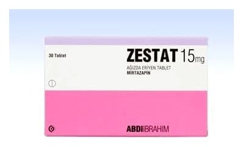

Zestat 15 mg Ağızda Dağılan Tablet, 30 Adet

Ne için kullanılır
KT · Bölüm 1ZESTAT, antidepresanlar adıyla bilinen bir ilaç grubunun üyesidir. ZESTAT majör depresif bozukluğun (ağır ruhsal çöküntü hastalığı) tedavisinde kullanılır.
ZESTAT tabletleri yuvarlak ve beyazdır. Tabletin bir yüzünde “A” diğer tarafında “36” basılı kenarı dairesel kabartmalıdır. 30 tabletlik ambalajlarda sunulmaktadır.